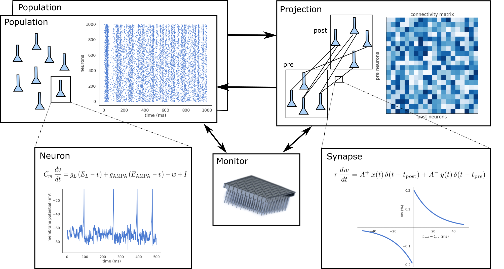

Overview
Structure of a neural network
A neural network in ANNarchy is a collection of interconnected Populations. Each population comprises a set of similar artificial Neurons, whose mean-firing rate or spiking behavior is governed by one or many ordinary differential equations (ODE). These ODEs are dependent on the activity of other neurons through Synapses. The connection pattern between two populations is called a Projection.
The efficiency of the connections received by a neuron is stored in a connectivity matrix, depending on the type that was assigned to them: excitatory, inhibitory, modulatory… This typed organization of afferent connections also allows to easily apply them different learning rules (Hebbian, three-factor, Oja, BCM, STDP…).

To define a neural network and simulate its behavior, you need to define the following information:
- The number of populations, their geometry (number of neurons, optionally the spatial structure - 1D/2D/3D).
- For each population, the type of neuron composing it, with all the necessary equations.
- For each projection between two populations, the connection pattern, the initial synaptic weights, and optionally the delays in synaptic transmission.
- For plastic synapses, the ODEs describing the evolution of synaptic weights during the simulation (learning).
- The interaction of the network with its environment (I/O relationships, rewarded tasks, fitting procedure…)
ANNarchy provides a convenient way to define this information in a single Python script or notebook. In this manual, we will focus on simple networks composed of a few interconnected populations, but more complex architectures are of course possible (see the examples in the provided Notebooks).
Definition of a model
In a script file (e.g. MyNetwork.py) or a Jupyter notebook, you first need to import the ANNarchy package:
import ANNarchy as annWe recommend using the ann alias to avoid polluting the global namespace. All the necessary objects and class definitions are then imported under the alias.
The second step is to define the neurons and synapses needed by your network. To keep things simple, we will define a simple neuron model, whose firing rate is determined by the leaky-integration of excitatory inputs:
LeakyIntegratorNeuron = ann.Neuron(
parameters = dict(
tau = 10.0,
baseline = -0.2
),
equations = [
'tau * dv/dt + v = baseline + sum(exc)',
'r = pos(v)'
]
)v is an internal variable integrating with the time constant tau the weighted sum of excitatory inputs sum(exc) to this neuron plus its baseline activity. r is the instantaneous firing rate of the neuron, defined as the positive part of mp. More details on the difference between parameters and variables, as well as details on the mathematical parser are to be found in the sections Parser and Rate-coded neurons.
The synapse type between the two populations will implement a simple Oja learning rule, which is a Hebbian learning rule with an additional regularization term:
Oja = ann.Synapse(
parameters = dict(
tau = 5000.0,
alpha = 8.0
),
equations = [
'tau * dw/dt = pre.r * post.r - alpha * post.r^2 * w',
]
)w represents the synaptic efficiency (or weight value). Its evolution over time depends on a time constant tau, the regularization parameter alpha, the pre-synaptic firing rate pre.r and the post-synaptic firing rate post.r. See Rate-coded synapses for more details.
Once these objects are defined, the network can be created. The main structure to create the model is an instance of the Network class, which can be simply created with:
net = ann.Network()Using the network, the populations can be created (section Populations) by calling Network.create(). We create here two populations pop1 and pop2 containing 100 neurons each and using the LeakyIntegratorNeuron neural model:
pop1 = net.create(geometry=100, neuron=LeakyIntegratorNeuron)
pop2 = net.create(geometry=100, neuron=LeakyIntegratorNeuron)Using Network.connect, we now define an excitatory projection between the neurons of pop1 and pop2, with a target exc and a all_to_all connection pattern (section Projections).
proj = net.connect(pre=pop1, post=pop2, target='exc', synapse=Oja)The synaptic weights are initialized randomly between 0.0 and 1.0:
proj.all_to_all(weights = ann.Uniform(0.0, 1.0))Now that the structure of the network is defined, it can be analyzed to generate optimized C++ code in a subfolder and create the underlying data:
net.compile()The network is now ready to be simulated for the desired duration:
net.simulate(1000.0) # simulate for 1 secondIt remains to set inputs, record variables and analyze the results, but the structure of the network is already there. The rest of the manual is there to get into more details on these objects.